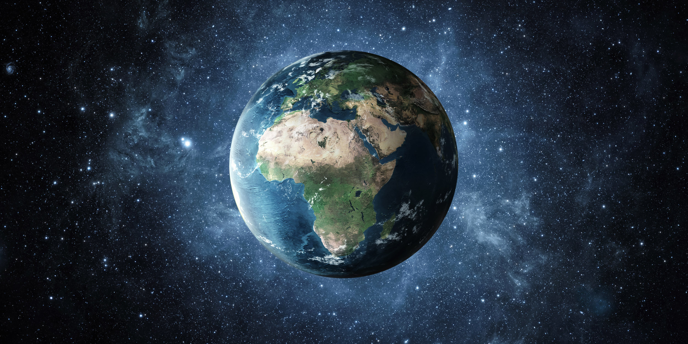

Дослідження землі
Земля третя від Сонця планета Сонячної системи, єдина планета, на якій відоме життя, домівка людства.

Земля третя від Сонця планета Сонячної системи, єдина планета, на якій відоме життя, домівка людства.
Діаметр Землі становить у середньому 12 742 км. Довжина великого кола, проведеного через обидва полюси, близько 40 009 км, а довжина екватора - 40 075 км (мал. 2). Площа поверхні земної кулі становить 510 млн км.
Квитки для подорожі в космосСередній радіус Землі становить 6371,032 км, екваторіальний — 6378,16 км, полярний — 6356,777 км.
Квитки для подорожі в космосскладається приблизно з 78 відсотків азоту та 21 відсотка кисню котрим ми дихаємо. Повітря також має невелику кількість безлічі інших газів, таких як діоксид вуглецю, неон та водень.
Квитки для подорожі в космосСидерична або зоряна доба, яка визначає час, за який Земля робить оберт навколо своєї осі відносно далеких об'єктів у космосі, триває приблизно 23 години, 56 хвилин і 4,1 секунди.
Квитки для подорожі в космосСередня температура поверхні Землі становить приблизно 15 0С, а її добові коливання згасають на глибині 1—2 м, а сезонні — на 10—30 м.
Квитки для подорожі в космоссонце завжди сідає близько сходу, тільки під час рівнодення, як-от учора, воно сідає прямо на заході.
Квитки для подорожі в космосатмосфера планети Земля, одна з геосфер, суміш газів, що оточують Землю, та утримуються завдяки силі тяжіння. Атмосфера здебільшого складається з азоту і кисню. Решта — це аргон та вуглекислий газ із неоном, гелієм, метаном, криптоном, воднем та невеликими домішками інших газів.
Квитки для подорожі в космос